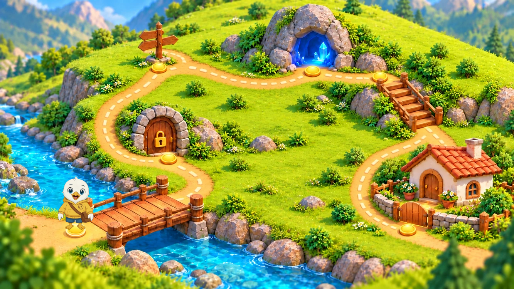

Approved sample ↔ playable game
आपके निर्देश अनुसार game और map में original UI वाला Swifty रखा गया है।
यात्रा वाला map Play के बाद और पड़ावों के बीच दिखाई देता है।

Actual game · यात्रा का mapऊपर के map, dots और speaker controls game में हटाए गए हैं। चित्रों के शब्द live हैं और एक tap से answer लगता है।
छह questions, wrong-answer retries, automatic hints, single taps और celebration तक play-through पास।
Original UI वाला Swifty — walking sprite